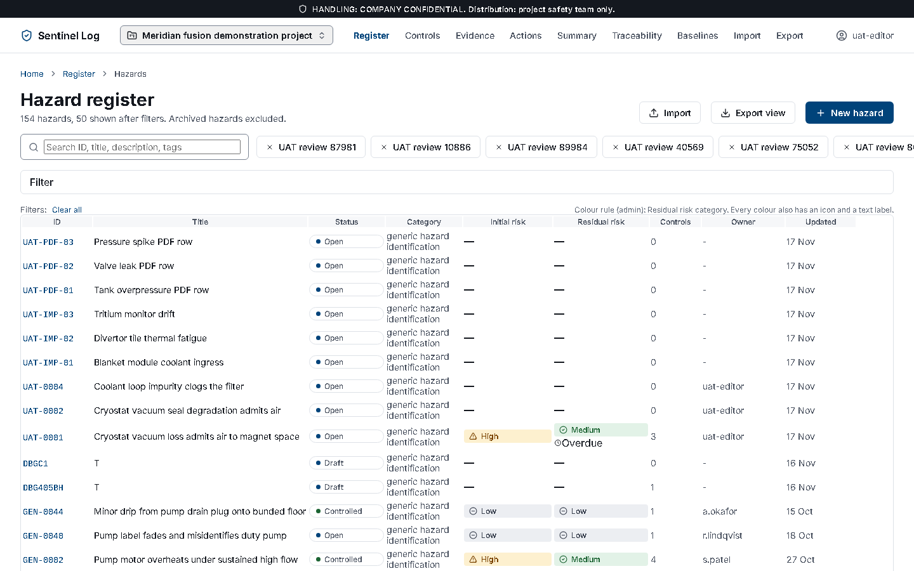
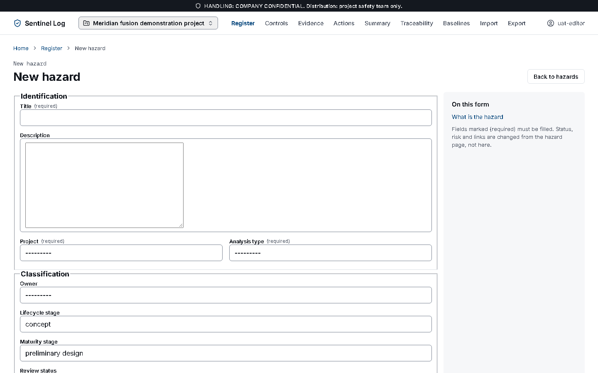
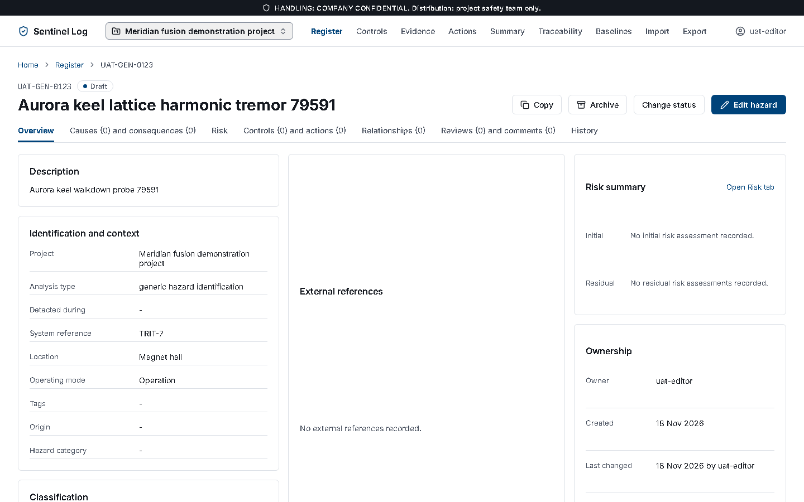
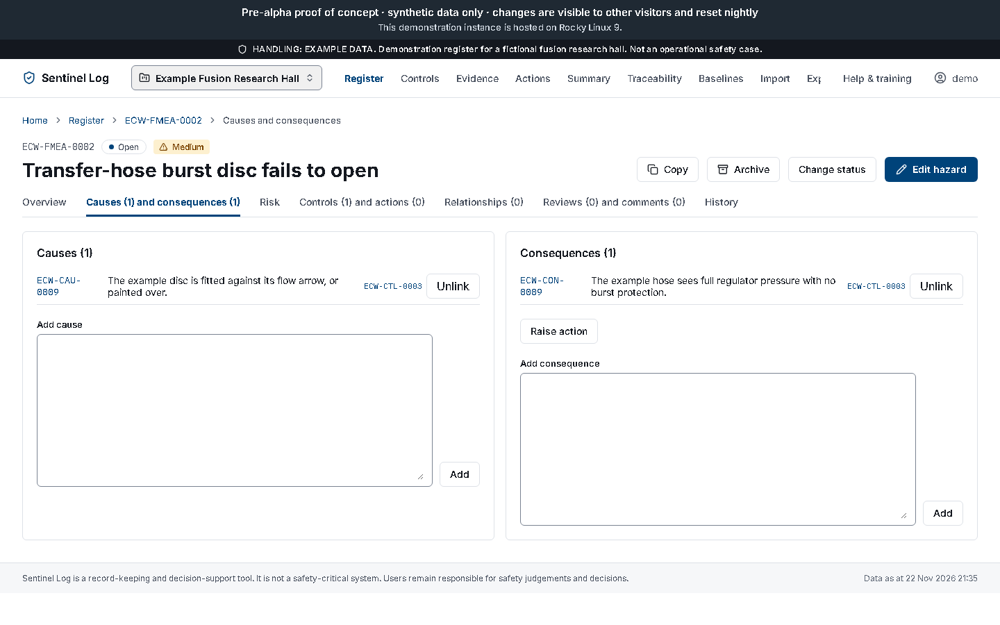
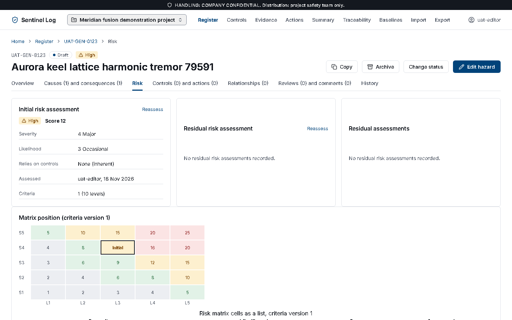

Create a hazard
For what to write in each box, see Write a complete hazard.
- Open New hazard. Pick project Meridian and analysis type Generic hazard identification. The form shows the core fields. See Figure 1 and Figure 2.

Figure 1. Register before create 
Figure 2. New hazard form - Enter a title that shares no words with the seeded or imported register rows. Add the description, system reference, location, operating mode, lifecycle stage, and owner. The duplicate offer stays silent. The system allocates the identifier on save. See Figure 3.

Figure 3. Title and fields entered - Save. The hazard detail page shows the title, description, context fields, and owner. The register lists the hazard. See Figure 4.

Figure 4. Hazard detail after save - Open the causes tab and add a cause. The cause shows its server-allocated identifier. See Figure 5.

Figure 5. Causes and consequences - Add a consequence. The consequence shows its server-allocated identifier.
- Record an initial risk assessment with severity and likelihood. The page shows the computed score and category. See Figure 6.

Figure 6. Initial risk assessment - Add a controlled-list free-text value. The value is flagged for administrator review and stays out of the selectable list.
Not in this release. HAZOP and FMEA worksheet fields, mishap records, configuration items, cause categories, optional data sets, analysis sessions, failure-mode status, extended cause categories, software location, normal operation record, and novel-technology causes are not in this release.